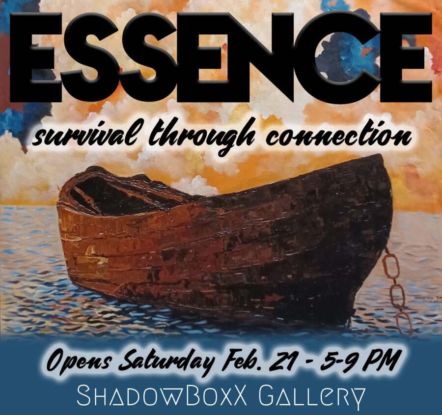

Essence – Survival Through Connection
Essence Exhibition Opens at ShadowBoxX Gallery Feb. 21 During ArtWauk
In celebration of Black History Month, ShadowBoxX Gallery is proud to present Essence, a group exhibition featuring eight contemporary black visual artists: Seven men, one woman, seven Nigerian, one American.
The exhibition presents bold interpretations of African identity, culture, and the human condition. Through spirit, story, emotion, nature, and culture, the artwork reflects the light that every human carries within that gives life direction and meaning.
Special Note: The morning before the opening, join us via Zoom Friday, February 20 at 9 AM to speak directly with the artists to ask questions about methods, meaning, or anything else: Artist Talk and Collector’s Preview. https://us02web.zoom.us/j/85120168381?pwd=AoxrbAFa4dg5FpUfbIaFuAPzZ7lpjo.1
The exhibition opens to the public on Feb. 21 from 5-9pm, as a part of the monthly ArtWauk. As usual with ArtWauk events, there will be taco trucks, a trolley between venues, and the ArtWauk vibe! The Essence exhibition is free to the public.
Following the opening, the exhibition will run through March 14, Thursdays, Fridays and Saturdays between Noon and 3PM, or by appointment.
Featured Artists: Adekunle Muizz, Paul Oyetunde Ogunlesi, Johnmark Toluwase Agbabiaka, “Blu” Ezechukwu C.G, Awobusuyi Yomi Abayomi, Adeleke Femi, Trotter Alexander, and Emmanuel Anaiye.
Roster of artists and preview of their works: https://www.manvshadow.com/essence-exhibition-artists